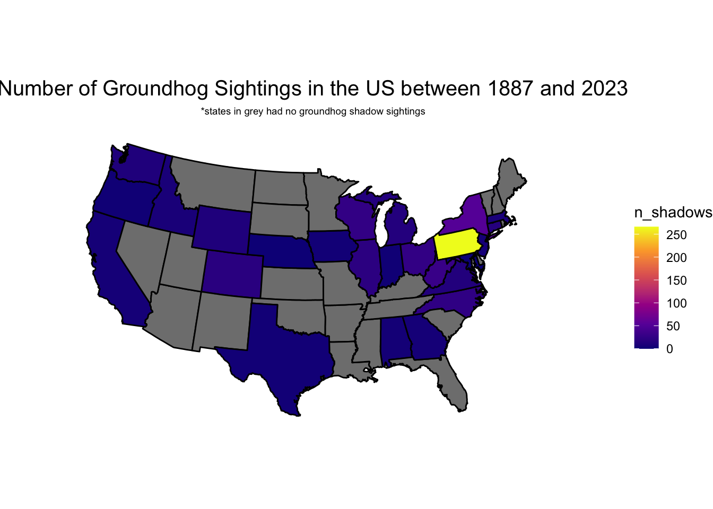
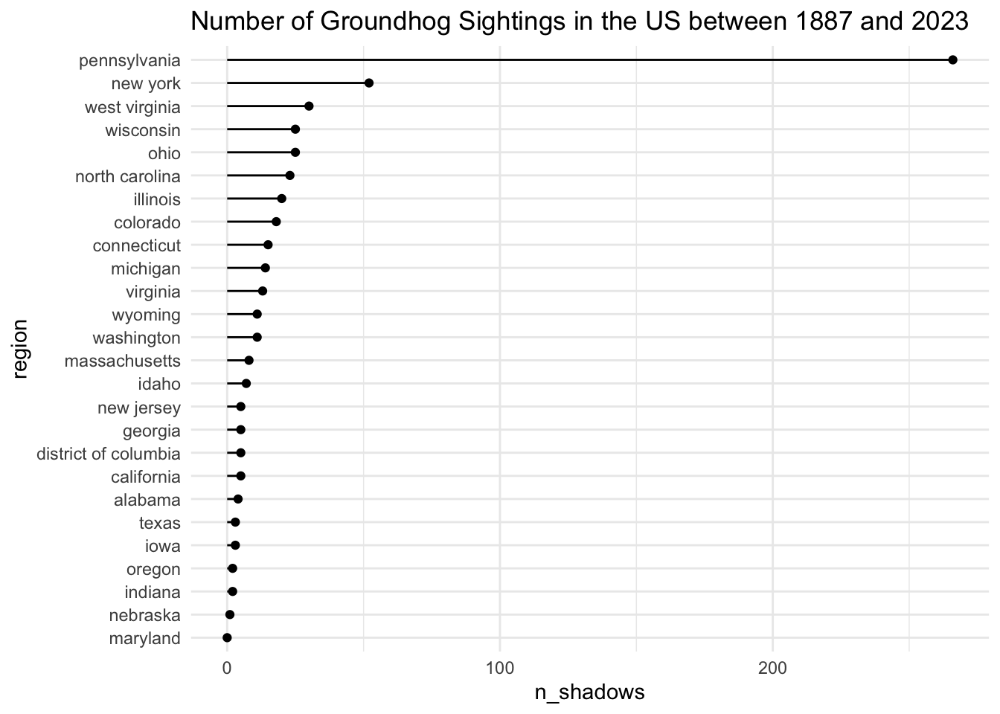
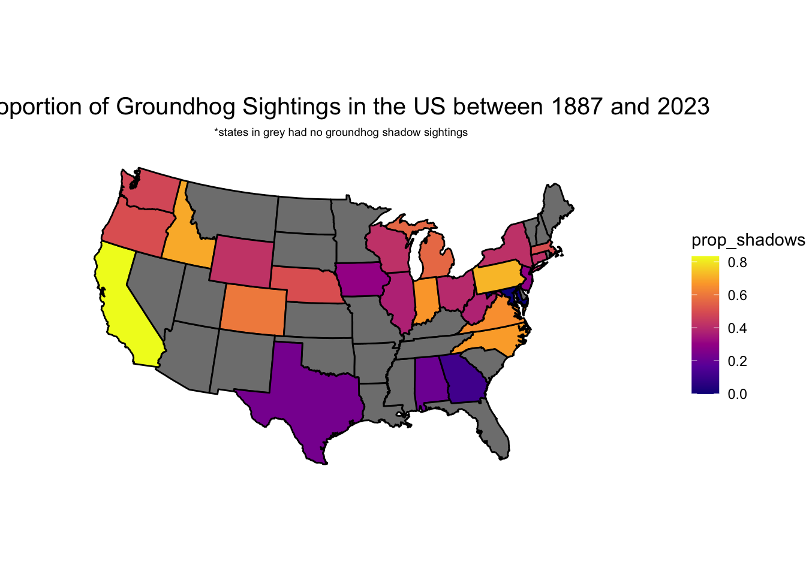
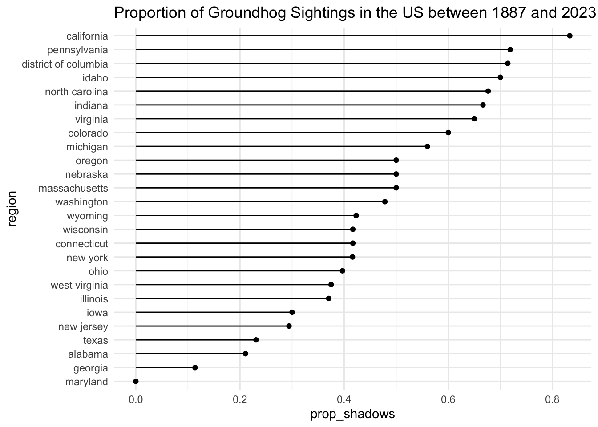

library(tidyverse)
library(readr)
library(maps)
library(here)
state_df <- ggplot2::map_data("state")
groundhogs <- read_csv(here("data/groundhogs.csv"))
predictions <- read_csv(here("data/predictions.csv"))Introduction
Groundhog day is an amusing American tradition celebrated on February 2nd, in which a groundhog either sees its shadow, meaning winter will extend 6 more weeks, or it doesn’t, meaning Spring will arrive early. The tradition is said to have originated from German-Americans and is especially popular in Pennsylvania, as there is a high German-American population there.
I think that it will be fun and interesting to look at data gathered from these celebrations, which is why for my first blog post I chose to work with the groundhog dataset from the TidyTuesday Repo on GitHub. The dataset is made up of two individual dataframes, entitled “groundhogs” and “predictions”. The “groundhogs” data provides information about the groundhogs’ names, states, and various other variables. The “predictions” dataset provides information about the predictions made by the groundhogs, measured in the shadow variable, these predictions have been gathered between 1887 and 2023. Additionally, I used the state_df which provides geographic information on different US states, such as their latitude and longitude. This will be useful to make a map.
I will need to join the two groundhog dataframes into one big datafrane using their id numbers. In this full dataset I am interested in looking at the shadow and region variables.
Question of interest
Is there a clear trend in predictions based on region? To be specific, are shadow sightings more common in Northern areas where it is more common to have longer winters in general?
Data set links
Groundhogs: https://github.com/rfordatascience/tidytuesday/blob/66f1fa48a2c09131e5500a7bf12201c6581f28fa/data/2024/2024-01-30/groundhogs.csv &
Predictions: https://github.com/rfordatascience/tidytuesday/blob/66f1fa48a2c09131e5500a7bf12201c6581f28fa/data/2024/2024-01-30/predictions.csv).
State_df: https://cran.r-project.org/web/packages/maps/maps.pdf
Read in the data and packages
Tidying, wrangling, and joining the data
First I had to join the “groundhogs” and “predictions” datasets to combine the two into one dataset which will have information about the groundhogs as well as their predictions.
groundhogs_pred <- left_join(groundhogs, predictions, by = "id")
groundhogs_pred# A tibble: 1,462 × 20
id slug shortname name city region country latitude longitude source
<dbl> <chr> <chr> <chr> <chr> <chr> <chr> <dbl> <dbl> <chr>
1 1 punxsut… Phil Punx… Punx… Penns… USA 40.9 -79.0 https…
2 1 punxsut… Phil Punx… Punx… Penns… USA 40.9 -79.0 https…
3 1 punxsut… Phil Punx… Punx… Penns… USA 40.9 -79.0 https…
4 1 punxsut… Phil Punx… Punx… Penns… USA 40.9 -79.0 https…
5 1 punxsut… Phil Punx… Punx… Penns… USA 40.9 -79.0 https…
6 1 punxsut… Phil Punx… Punx… Penns… USA 40.9 -79.0 https…
7 1 punxsut… Phil Punx… Punx… Penns… USA 40.9 -79.0 https…
8 1 punxsut… Phil Punx… Punx… Penns… USA 40.9 -79.0 https…
9 1 punxsut… Phil Punx… Punx… Penns… USA 40.9 -79.0 https…
10 1 punxsut… Phil Punx… Punx… Penns… USA 40.9 -79.0 https…
# ℹ 1,452 more rows
# ℹ 10 more variables: current_prediction <chr>, is_groundhog <lgl>,
# type <chr>, active <lgl>, description <chr>, image <chr>,
# predictions_count <dbl>, year <dbl>, shadow <lgl>, details <chr>The “groundhogs_pred” dataset has some groundhogs in Canada in addition to the US. For the purpose of my investigation, I only want to look at groundhogs in the US so I filtered the dataset to only include those. Some of the earlier groundhog days in the dataset do not have anything recorded for the shadow variable so I filtered out those NA cases. Lastly, I changed the names of the states in the region variable to lowercase so that they would match the names in the state_df.
groundhogs_pred <- groundhogs_pred |> filter(country == "USA") |> filter(!is.na(shadow)) |> mutate(region = tolower(region))Next, I found the number of times groundhogs in each state saw their shadow by grouping by region and using summarise to create the n_shadows variable.
groundhogs_sum <- groundhogs_pred |> group_by(region) |> summarise(n_shadows = sum(shadow)) Then, I joined the summarised groundhogs data with the state_df so that I would be able to create a map of the groundhog shadow sightings in the US.
sum_state_groundhog <- right_join(groundhogs_sum, state_df, by = "region")Map of the Number of Groundhog Sightings in the US between 1887 and 2023
ggplot(data = sum_state_groundhog, aes(x = long, y = lat, group = group)) +
geom_polygon(colour = "black", aes(fill = n_shadows)) +
coord_map(projection = "albers", lat0 = 39, lat1 = 45) +
theme_void() +
scale_fill_viridis_c(option = "plasma") + labs(title = "Number of Groundhog Sightings in the US between 1887 and 2023", subtitle = "*states in grey had no groundhog shadow sightings") + theme(plot.title = element_text(hjust = 0.5, size = 15), plot.subtitle = element_text(hjust = 0.5, size = 7))
Using the maps package as well as the sum_state_groundhog dataset I created, I was able to make the above map. As its title states, the map depicts “The Number of Groundhog Sightings in the US between 1887 and 2023”. One of the first things to stand out in the map, unsurprisingly, is Pennsylvania which is highlighted in yellow as the state with the highest number of shadow sightings. This makes sense because Punxsutawney, Pennsylvania is where the main Groundhog Day ceremony is held, so thus, there would be a high number of recordings of Groundhog Day results, leading to a higher number of shadow sightings by default. In addition to Punxsutawney, there are several other small towns in Pennsylvania that participate in the tradition, so there would be a bigger number of recordings and thus shadow sightings.
Interestingly, it does seem that overall states in the north and northeast particular seem to have a higher number of shadow sightings which relates back to my question of interest. In colder states, groundhogs see their shadows more often, thus predicting a longer winter more frequently.
However, not all northern states have this. In fact many of the states are grey which means that they have no shadow sightings recorded in the dataset. This is interesting because this either means that the states had no Groundhog Day recordings at all or they simply didn’t have shadow sightings.
groundhogs_lolli <- groundhogs_sum |> mutate(region = fct_reorder(region, n_shadows))
ggplot(data = groundhogs_lolli, aes(x = region, y = n_shadows)) + labs(title = "Number of Groundhog Sightings in the US between 1887 and 2023") + geom_segment(aes(xend = region, y = 0, yend = n_shadows)) +
geom_point() + coord_flip() + theme(plot.title = element_text(hjust = 0.5, size = 15), plot.subtitle = element_text(hjust = 0.5, size = 7)) + theme_minimal()
All of this can also be seen in the above lollipop plot, which is a simplified rendition of the same data. The lollipop plot highlights just how insufficient using the number of shadow sightings is for representing the trends in the data. Using only the number of shadow sightings does not give a sense of how common or uncommon a shadow sighting is. Therefore, I made a new dataset with a variable calculating the proportion of shadow sightings in the US. I then used this new dataset to make a new map and lollipop plot using the proportion instead.
groundhogs_prop <- groundhogs_pred |> group_by(region) |> summarise(prop_shadows = mean(shadow))
prop_state_groundhog <- right_join(groundhogs_prop, state_df, by = "region")
ggplot(data = prop_state_groundhog, aes(x = long, y = lat, group = group)) +
geom_polygon(colour = "black", aes(fill = prop_shadows)) +
coord_map(projection = "albers", lat0 = 39, lat1 = 45) +
theme_void() +
scale_fill_viridis_c(option = "plasma") + labs(title = "Proportion of Groundhog Sightings in the US between 1887 and 2023", subtitle = "*states in grey had no groundhog shadow sightings") + theme(plot.title = element_text(hjust = 0.5, size = 15), plot.subtitle = element_text(hjust = 0.5, size = 7))
As predicted, the proportion is a much more effective method at looking at the trends in data in both plots. The map, in particular, clearly exhibits greater variance than the previous map using only the number of shadow sightings. Interestingly, however, instead of Pennsylvania having the highest proportion of sightings, it is California. This is likely because there have been fewer Groundhog Days in California, leaving a smaller sample size to calculate the proportion from, thus making the proportion deceptively high. But as shown in the below lollipop plot as well, the proportion does give a better sense of the variance of the data, which makes it overall more effective for examining the trends in the data.
groundhogs_lolli_prop <- groundhogs_prop |> mutate(region = fct_reorder(region, prop_shadows))
ggplot(data = groundhogs_lolli_prop, aes(x = region, y = prop_shadows)) + labs(title = "Proportion of Groundhog Sightings in the US between 1887 and 2023") + geom_segment(aes(xend = region, y = 0, yend = prop_shadows)) +
geom_point() + coord_flip() + theme(plot.title = element_text(hjust = 0.5, size = 15), plot.subtitle = element_text(hjust = 0.5, size = 7)) + theme_minimal()
Conclusion and wrap-up
Overall, I would say that my primary visualization methods did not necessarily work perfectly to visualize the data. However, the ability to use maps to graph and visualize the data makes it more interesting, and easier to get a sense of the spread of groundhog sightings in the US. I think this can be helpful in cases like this where geographic information is important, especially since with this data in particular I was interested in how the trend in shadows relates to the geographical layout of the US. If I had more time I would be interested in researching the shadow sightings over the course of time. I also think it would be interesting to look at the differences between rural and urban communities groundhog recordings. I also would have liked to be able to categorize states as either north or south to investigate the data.
Connection to class ideas
I used a lot of the ideas we learned in class to visualize the data I was working with. One of the main things I was able to work with was to be able to adjust the specifics of the theme of my graphs to make them easier to read and better to look at. I also used the color scale concept that we learned, using a continuous or sequential scale on both of my maps since both the prop_shadows and n_shadows variables are continuous variables. I would say that my graphs, especially the maps, are an effective way of displaying the trends of data in both the proportion and number of groundhog shadow sightings in the US. The maps are particularly effective because they visualize the data in geographical context. One drawback however is there are many missing values, which makes thr graph less complete. But I would say generally speaking the graphs are an effective means of displaying the data.